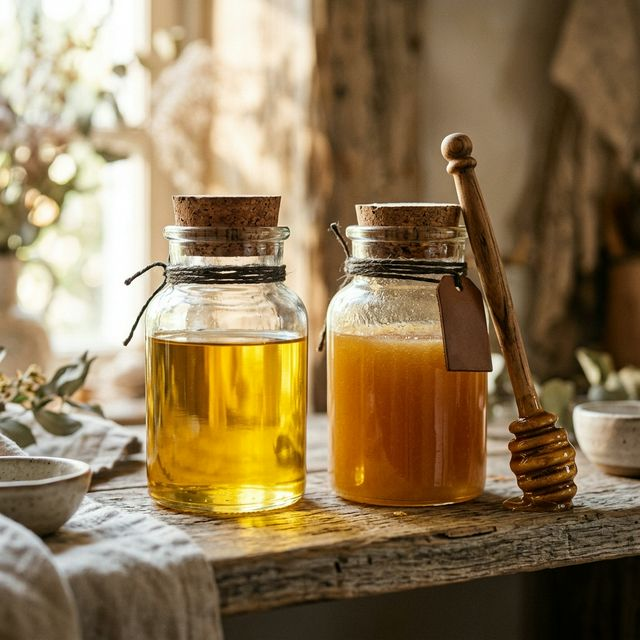
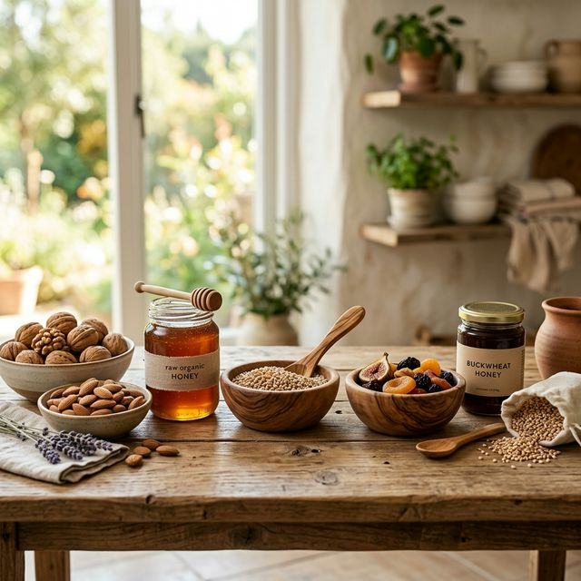

Where traditional craftsmanship meets contemporary purity.

Our Ghee is not made; it is nurtured. We follow the ancient Bilona method, where A2 milk is curdled into yogurt, then hand-churned in copper vessels with a wooden churner (madhani).
The resulting butter is slow-cooked over a mild fire until it clarifies into the golden essence of wellness. This process preserves the vital MCFAs and fat-soluble vitamins that commercial methods destroy.
Modern factories use industrial ovens to flash-dry herbs and fruits. We use the sun. Our amla, saffron, and spices are spread on traditional trays and sun-dried slowly.
This natural dehydration preserves the volatile oils and aromatic compounds that give our products their intense flavor and healing properties.

Cereals and millets at Shalini Devi Health Products are hand-pounded or stone-ground. Unlike high-speed steel mills that generate heat and strip the grain of its nutritious bran and germ, our method keeps the grain's life intact.
Experience the fiber-rich, wholesome texture that was once the secret to the vitality of our ancestors.
Our Dry Fruit Laddus and homemade spice mixes are crafted in small batches by artisanal homemakers, ensuring the same love and care you'd find in your own mother's kitchen.
Experience the Craft